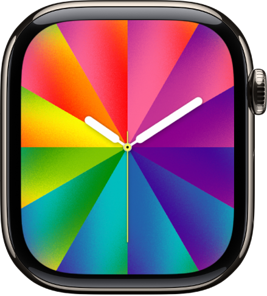

此表盘旨在庆祝彩虹的活力、精神和个性。你可以为多款彩虹旗帜选取背景颜色，打造专属的个性表达。
下方的文件数包括本地化资源。固件名称键能确认包的归属；组件的圆屏点击边界、亮屏过渡与 AOD 对照均待设备验证。
原始包 已解析属性表 Mach-O 方法与成员 ARM64 汇编
.strings × 88 .plist × 2 .json × 1 .metallib × 1 无扩展名 × 1
原始包 已解析属性表 Mach-O 方法与成员 ARM64 汇编
.strings × 88 .plist × 2 .json × 1 .metallib × 1 无扩展名 × 1
原始包 已解析属性表 Mach-O 方法与成员 ARM64 汇编
.strings × 88 .plist × 2 .json × 1 .metallib × 1 无扩展名 × 1
NTKPride2026FaceBundleFaceBundle.bundlePRIDE2026_SHORT_DESCRIPTIONPRIDE2026_DESCRIPTIONpride2026.picker.cobalt bluepride2026.picker.yellow orangepride2026.picker.graypride2026.picker.dark sky bluepride2026.picker.pink brownpride2026.picker.dark cyanpride2026.picker.blue purplepride2026.picker.warm graypride2026.picker.magentapride2026.picker.purple bluepride2026.picker.dark warm graypride2026.picker.red pinkpride2026.picker.dark magenta pinkpride2026.picker.light magentapride2026.picker.dark warm pinkcustompride2026.picker.light pinkpride2026.picker.dark purplestyle11pride2026.picker.cool greenpride2026.picker.green yellowpride2026.picker.yellow greenpride2026.picker.dark warm redpride2026.picker.dark blue purplestyle3pride2026.picker.light magenta purplepride2026.picker.dark cool greenstyle6pride2026.picker.orange yellowstyle9pride2026.picker.whitepride2026.picker.light sky bluepride2026.picker.magenta purplepride2026.picker.light red pinkpride2026.picker.light cool greenpride2026.picker.cyanpride2026.picker.light cool terracottapride2026.picker.dark graypride2026.picker.light purple magentapride2026.picker.light warm pinkstyle10pride2026.picker.dark greenpride2026.picker.light bluepride2026.picker.stonepride2026.picker.dark magentapride2026.picker.walnutpride2026.picker.dark cobalt bluepride2026.picker.pinkpride2026.picker.light blue purplepride2026.picker.dark warm greenpride2026.picker.dark beige pinkpride2026.picker.light cyanpride2026.picker.dark red brownpride2026.picker.yellowpride2026.picker.dark red pinkpride2026.picker.khakipride2026.picker.greenstyle1pride2026.picker.sky bluestyle4pride2026.picker.dark khakipride2026.picker.dark redpride2026.picker.redstyle7pride2026.picker.terracottapride2026.picker.purplepride2026.picker.beige pinkpride2026.picker.warm pinkpride2026.picker.blackpride2026.picker.creampride2026.picker.light greenpride2026.picker.light purple pinkpride2026.picker.light purple bluepride2026.picker.orangepride2026.picker.light green yellowpride2026.picker.orange redpride2026.picker.cool graypride2026.picker.bluepride2026.picker.red brownpride2026.picker.light yellowpride2026.picker.cool terracottapride2026.picker.copperstyle2style5pride2026.picker.light stonestyle8pride2026.picker.warm greenEDIT_OPTION_LABEL_PRIDE2026_STYLE_CONICALEDIT_OPTION_LABEL_PRIDE2026_STYLE_CYLINDRICAL_COMPANIONEDIT_OPTION_LABEL_PRIDE2026_STYLE_CYLINDRICALEDIT_MODE_LABEL_PRIDE2026_LENS_COMPANIONEDIT_MODE_LABEL_PRIDE2026_STYLE_COMPANIONEDIT_MODE_LABEL_PRIDE2026_STYLEEDIT_MODE_LABEL_PRIDE2026_LENSEDIT_OPTION_LABEL_PRIDE2026_STYLE_CONICAL_COMPANION色组与设备条件 Pride2026.color.plist 共享色组与默认值
-[_TtC32NTKPride2026FaceBundleFaceBundle17Pride2026FaceView tritium_didTransitionToTritiumOn];-[_TtC32NTKPride2026FaceBundleFaceBundle17Pride2026FaceView tritium_willBeginRenderingFlipbookContent];-[_TtC32NTKPride2026FaceBundleFaceBundle17Pride2026FaceView tritium_didTransitionToTritiumOff];-[_TtC32NTKPride2026FaceBundleFaceBundle17Pride2026FaceView tritium_createFaceAnimator];-[_TtC32NTKPride2026FaceBundleFaceBundle17Pride2026FaceView tritium_prepareForInactiveStateBurnInStudy];-[_TtC32NTKPride2026FaceBundleFaceBundle17Pride2026FaceView tritium_willTransitionToTritiumOnToFrameSpecifier:];-[_TtC32NTKPride2026FaceBundleFaceBundle17Pride2026FaceView tritium_willTransitionToTritiumOffFromFrameSpecifier:];-[_TtC32NTKPride2026FaceBundleFaceBundle17Pride2026FaceView tritium_didTransitionToTritiumOn];-[_TtC32NTKPride2026FaceBundleFaceBundle17Pride2026FaceView tritium_didTransitionToTritiumOff];-[_TtC32NTKPride2026FaceBundleFaceBundle17Pride2026FaceView _applyTransitionFraction:fromOption:toOption:forCustomEditMode:slot:];-[_TtC32NTKPride2026FaceBundleFaceBundle17Pride2026FaceView tritium_createFaceAnimator];-[_TtC32NTKPride2026FaceBundleFaceBundle17Pride2026FaceView _cleanupAfterTransitionToOption:forCustomEditMode:slot:];-[_TtC32NTKPride2026FaceBundleFaceBundle17Pride2026FaceView _cleanupAfterTransitionComplicationSlot:selectedComplication:];-[_TtC32NTKPride2026FaceBundleFaceBundle17Pride2026FaceView _configureForTransitionFraction:fromEditMode:toEditMode:];-[_TtC32NTKPride2026FaceBundleFaceBundle17Pride2026FaceView tritium_willTransitionToTritiumOnToFrameSpecifier:];-[_TtC32NTKPride2026FaceBundleFaceBundle17Pride2026FaceView tritium_willTransitionToTritiumOffFromFrameSpecifier:];+[_TtC32NTKPride2026FaceBundleFaceBundle13Pride2026Face _initialDefaultComplicationForSlot:forDevice:];+[_TtC32NTKPride2026FaceBundleFaceBundle13Pride2026Face complicationConfiguration];-[_TtC32NTKPride2026FaceBundleFaceBundle13Pride2026Face editOptionThatHidesAllComplications];-[_TtC32NTKPride2026FaceBundleFaceBundle13Pride2026Face curatedGalleryBackgroundColors];-[_TtC32NTKPride2026FaceBundleFaceBundle13Pride2026Face _numberOfOptionsForCustomEditMode:slot:];-[_TtC32NTKPride2026FaceBundleFaceBundle13Pride2026Face _defaultOptionForCustomEditMode:slot:];-[_TtC32NTKPride2026FaceBundleFaceBundle13Pride2026Face _indexOfOption:forCustomEditMode:slot:];-[_TtC32NTKPride2026FaceBundleFaceBundle13Pride2026Face _optionAtIndex:forCustomEditMode:slot:];-[_TtC32NTKPride2026FaceBundleFaceBundle17Pride2026FaceView createFaceColorPalette];-[_TtC32NTKPride2026FaceBundleFaceBundle17Pride2026FaceView _applyTransitionFraction:fromOption:toOption:forCustomEditMode:slot:];-[_TtC32NTKPride2026FaceBundleFaceBundle17Pride2026FaceView layoutSubviews];-[_TtC32NTKPride2026FaceBundleFaceBundle17Pride2026FaceView _applyBreathingFraction:forCustomEditMode:slot:];-[_TtC32NTKPride2026FaceBundleFaceBundle17Pride2026FaceView _cleanupAfterTransitionToOption:forCustomEditMode:slot:];-[_TtC32NTKPride2026FaceBundleFaceBundle17Pride2026FaceView _applyOption:forCustomEditMode:slot:];-[_TtC32NTKPride2026FaceBundleFaceBundle17Pride2026FaceView _swatchColorForColorOption:];-[_TtC32NTKPride2026FaceBundleFaceBundle17Pride2026FaceView _configureComplicationView:forSlot:];-[_TtC32NTKPride2026FaceBundleFaceBundle17Pride2026FaceView _cleanupAfterTransitionComplicationSlot:selectedComplication:];-[_TtC32NTKPride2026FaceBundleFaceBundle17Pride2026FaceView _loadLayoutRules];-[_TtC32NTKPride2026FaceBundleFaceBundle17Pride2026FaceView colorForView:accented:];-[_TtC32NTKPride2026FaceBundleFaceBundle17Pride2026FaceView _applyRubberBandingFraction:forCustomEditMode:slot:];-[_TtC32NTKPride2026FaceBundleFaceBundle17Pride2026FaceView swatchPrimaryColorForColorOption:];-[_TtC32NTKPride2026FaceBundleFaceBundle21Pride2026ColorPalette swatchImageForSize:];-[_TtC32NTKPride2026FaceBundleFaceBundle21Pride2026ColorPalette init];-[_TtC32NTKPride2026FaceBundleFaceBundle21Pride2026ColorPalette initWithDomainName:inBundle:];-[_TtC32NTKPride2026FaceBundleFaceBundle21Pride2026ColorPalette initWithFaceClass:];-[_TtC32NTKPride2026FaceBundleFaceBundle22Pride2026MiniClockView layoutSubviews];